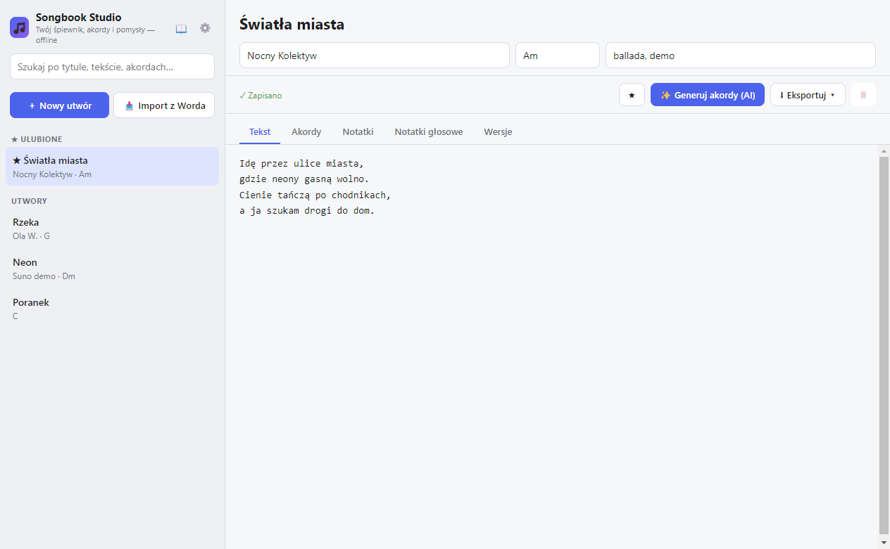
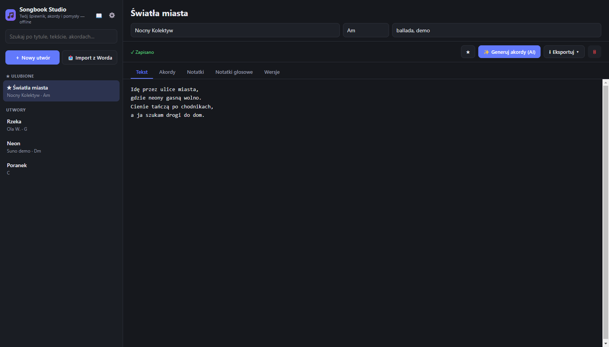

Teksty piosenek, akordy i pomysły na utwory — w jednym miejscu, na Twoim komputerze. Działa offline. Darmowe i open source.
Wersja ze Sklepu instaluje się jednym kliknięciem, bez ostrzeżeń SmartScreen, i aktualizuje się automatycznie.


Aplikacja nie zbiera żadnych danych — nie ma kont, telemetrii ani reklam. Teksty, nagrania i ustawienia zostają na Twoim komputerze. Cokolwiek opuszcza urządzenie wyłącznie wtedy, gdy sam wprowadzisz klucz API i użyjesz generowania akordów przez AI. Szczegóły: polityka prywatności.